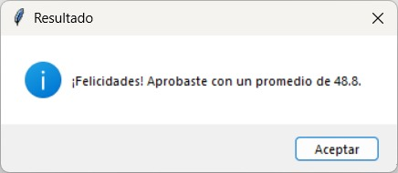

Estudiante de Analista Programador en INACAP - Chile
Apasionado por la ciberseguridad y con 12 años de experiencia en sistemas de seguridad electrónica e integral
Actualmente estoy comenzando mi camino en la programación. Tengo experiencia práctica en proyectos del área técnica de seguridad electrónica, pero estoy estudiando Analista-Programador para sumar proyectos propios de desarrollo y ciberseguridad a mi portafolio.
Pro-Media ha sido mi primer proyecto en el transcurso de mis estudios, en el cual podemos calcular un promedio simple o ponderado de notas, fue realizado en Python.
Acá podemos calcular un promedio simple
Y aquí nos entrega el promedio
En está opción podemos calcular un ponderado de notas con %
Se le va agregando la nota obtenida y el % equivalente
Acá podemos observar el manejo de errores en el caso de que quiera sobrepasar el 100 %
Aquí calculamos el 100 %
Dandonos el resultado final
Uso de Datamodeler
Ejemplo de uso de SQL realizando un Trigger
Uso de MongoDB con Python